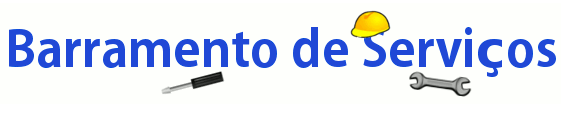
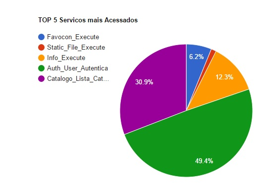
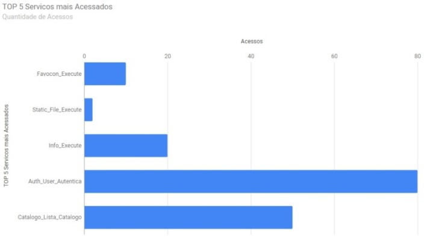
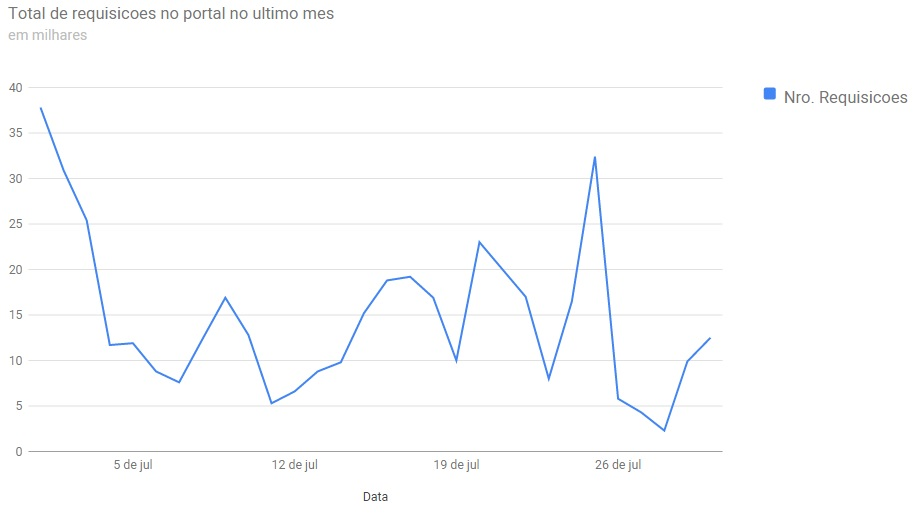

| Versão
1.0 lançada! Atualmente possuímos xxx serviços disponíveis para você e mais xxxxx usuários!
|
Serviços Mais Utilizados   |
Requisições no Portal no Último Mês  |
Este projeto é a implementação do conceito de "barramento de serviços" (ou Enterprise Service Bus
- ESB), uma camada intermediadora entre componentes de software
(denominandos "serviços") e aplicações que consomem estes serviços. O
barramento de serviços provê uma interface unificada para o acesso a
esses serviços.
A utilização do barramento de serviços de forma apropriada poderá possibilitar, entre outras vantagens:
1)
Promover a reusabilidade de componentes de software - implementando os
componentes na forma de serviços, uma vez que o serviço esteja
publicado no barramento de serviços, ele poderá ser acessado por
diversas outras aplicações, inclusive outras que não estavam previstas
inicialmente para utilizar o serviço. Com a existência de um catálogo
de serviços, a equipe de desenvolvimento de uma nova aplicação pode
reutilizar componentes disponíveis no portal ao invés de realizar um
novo desenvolvimento destes componentes, reduzindo prazos e custos no
projeto da aplicação.
2) Promover a integração entre aplicações
- independentemente da arquitetura em que o serviço foi desenvolvido,
uma vez publicado no barramento, o acesso ao mesmo é feito por uma
interface padronizada, possibilitando o seu consumo por aplicações
desenvolvidos em diferentes tecnologias.
3) Controle de acesso
centralizado aos serviços - o controle de acesso aos serviços do
barramento é centralizado e é estabelecido por uma "assinatura" do
serviço pela aplicação. Também é possível limitar a utilização de um
serviço somente para determinadas aplicações.
4) Monitorar
o consumo dos serviços - todas as chamadas aos serviços do barramento
são monitoradas e podem ser visualizadas posteriormente por usuários
autorizados.
5) Diagnosticar pontos de "gargalo" na
chamada aos serviços - O monitoramento do consumo dos serviços do
barramento permite a detecção de "gargalos" que podem originar do
consumo excessivo de um determinado serviço.
6) Controlar a
disponibilização e versionamento de serviços - Com o barramento de
serviços, a equipe de desenvolvimento responsável pela
manutenção/atualização de um determinado serviço poderá verificar quais
aplicações serão afetadas por essa operação. E uma vez substituído o
serviço, não é necessário realizar alterações nessas aplicações.
Se for o caso, versões futuras do serviço também podem ser publicadas
como serviços independentes (sem substituição do serviço anterior).
Este barramento orientado a serviços foi
desenvolvido pela Turma de Engenharia de Software do Mestrado
Profissional em Computação Aplicada (MPCA) da Universidade de
Brasília.É escrito em Erlang e permite manipular grande quantidade de
requisições sem perda de performance. O que torna este barramento
diferente de outros barramentos SOA é a facilidade de configuração e
uso, além de diversos controles visuais para acompanhar a utilização dos serviços, como por exemplo:
Por meio do gráfico de pizza a seguir você pode visualizar nossos serviços mais acessados (os 5 melhores Rankeados quanto ao número de acessos).
Por meio do gráfico de barras a seguir você pode visualizar a quantidade de acessos para cada um de nossos serviços.
Por meio do gráfico a seguir você pode visualizar a quantidade total de acessos no portal no último mês